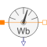

MagneticFluxSensorSensor to measure magnetic flux |

|
Connectors (3)
| port_p |
Type: PositiveMagneticPort Description: Positive magnetic port |
|
|---|---|---|
| port_n |
Type: NegativeMagneticPort Description: Negative magnetic port |
|
| Phi |
Type: RealOutput Description: Magnetic flux from port p to port n as output signal |
Used in Examples (3)
|
Modelica.Magnetic.FluxTubes.Examples.BasicExamples Educational example: iron core with airgap |
|
|
Modelica.Magnetic.FluxTubes.Examples.BasicExamples Educational example: iron core with airgap |
|
|
ToroidalCoreQuadraticCrossSection Modelica.Magnetic.FluxTubes.Examples.BasicExamples Educational example: iron core with airgap |
Used in Components (1)
|
FundamentalWavePermabilitySensor Modelica.Magnetic.QuasiStatic.FluxTubes.Sensors.Transient Sensor of fundamental wave permeability |